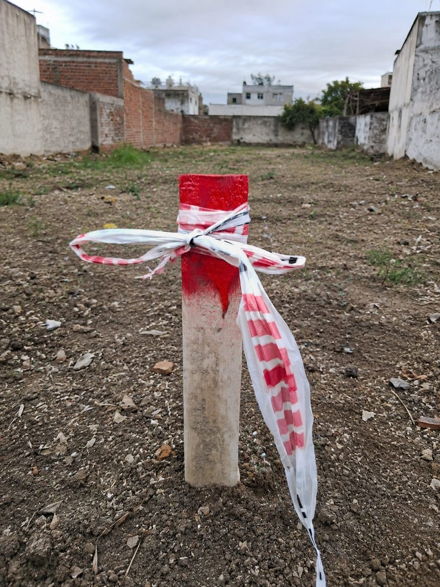
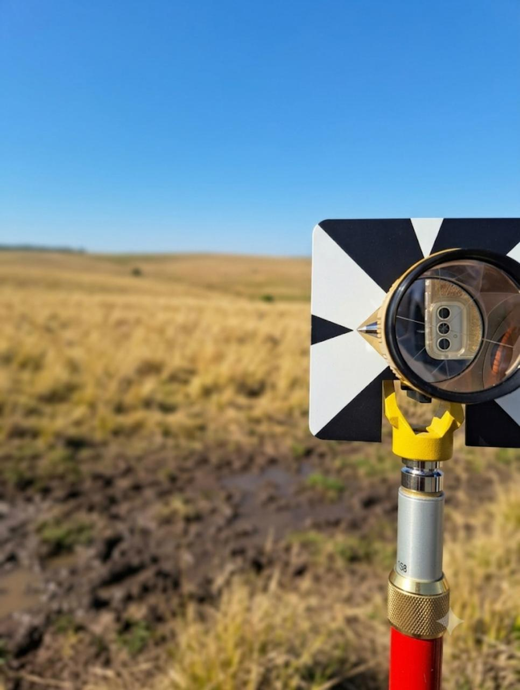
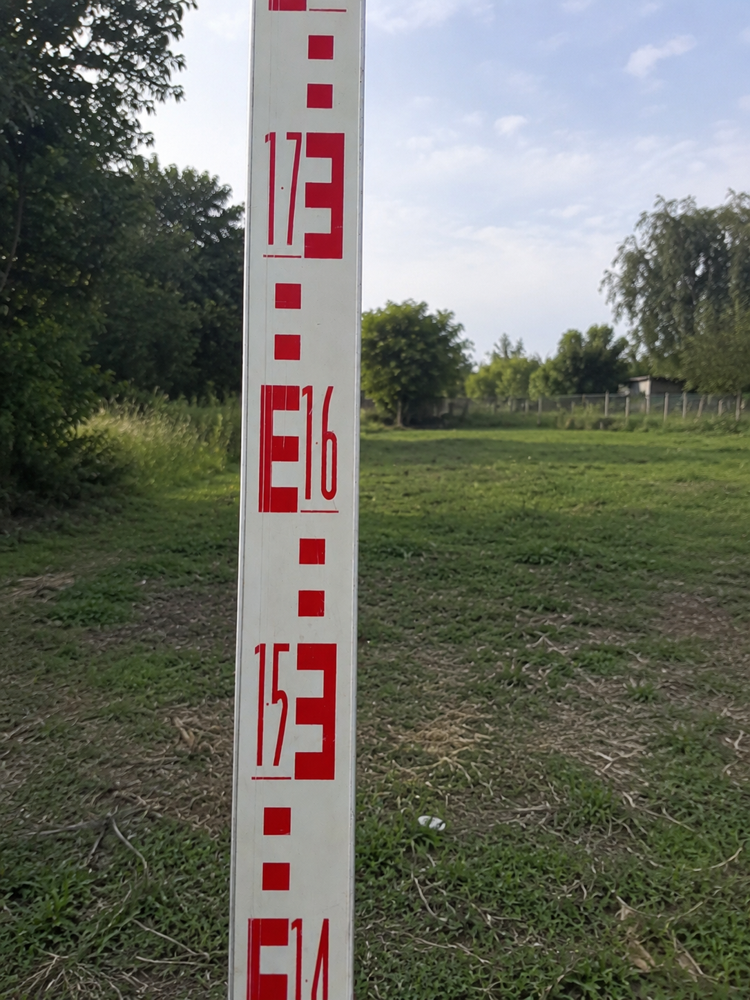

En INA Agrimensura brindamos servicios de agrimensura y topografía para particulares, empresas y profesionales de la construcción, acompañando cada proyecto desde la consulta inicial hasta su finalización.
Contamos con experiencia en topografía aplicada a obras públicas y en trabajos de agrimensura vinculados a propiedades urbanas y rurales. Cada trabajo es realizado por un agrimensor matriculado, priorizando el cumplimiento de la normativa vigente, la precisión en las mediciones y una comunicación clara durante todo el proceso.
Desarrollamos trabajos en San Carlos de Bolívar, La Plata y localidades cercanas de la provincia de Buenos Aires, realizando mensuras, estados parcelarios, propiedad horizontal, deslindes, amojonamientos, nivelaciones y otros trabajos relacionados con la agrimensura y la topografía.
Contanos tu necesidad y te asesoraremos sin cargo.





